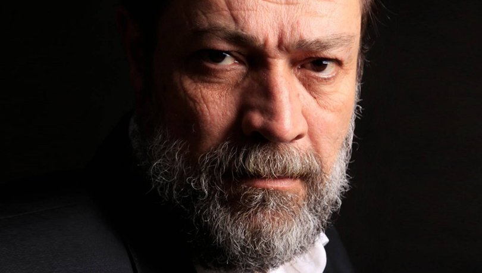

Seda Yıldız koronavirüse yakalandı

Fenerbahçe'de yeni teknik direktör İsmail Kartal oldu!


Fenerbahçe'nin teknik direktörlük için İsmail Kartal ile anlaşmasının ardından Yılmaz Vural da bir paylaşım yaptı. Tecrübeli çalıştırıcı "Elbet bir gün buluşacağız" ifadelerini kullandı
Türkiye Koronavirüs vaka sayılarındaki artışı konuşuyor. Hava sıcaklıklarının hızla düşmesi ve insanların kapalı mekanlarda daha fazla vakit geçirmek zorunda kalması, Güney Afrika ülkelerinde tespit edilen Omicron varyantının da etkisiyle vaka sayılarının yükselmesine neden oldu. 12 Ocak Çarşamba koronavirüs tablosuna göre vaka sayıları 75 bin sınırını geçti. Sağlık Bakanı Fahrettin Koca, her akşam düzenli olarak güncel koronavirüs tablosunu açıklıyor. Bugünkü vaka sayısı kaç oldu? 12 Ocak Çarşamba koronavirüs tablosu açıklandı
Beşiktaş'a, hastalığı bulunan isimlerden iyi haber geldi. Siyah-beyazlılarda Miralem Pjanic, Oğuzhan Özyakup ve Rachid Ghezzal takıma döndü.
Enerji Piyasası Düzenleme Kurumu (EPDK) Başkanı Yılmaz, 1 Ocak'tan itibaren geçerli olan elektrik tarifelerinin aralık faturalarına yansıtıldığı yönünde kuruma iletilen şikayetler üzerine aralık ayına ait faturaları mercek altına aldıklarını açıkladı.
Ünlü oyuncu Seda Yıldız'ın koronavirüs testi pozitif çıktı. Yıldız'ın, evinde karantinaya girip dinlendiği öğrenildi
Fenerbahçe'de son dakika gelişmesi... Sarı-lacivertli kulübü, sezonun geri kalanı için takımın başına Teknik Direktör İsmail Kartal'ın getirildiğini duyurdu. Yapılan açıklamada, "İsmail Kartal, Fenerbahçe’nin kendisine ihtiyacı olduğu her anda kayıtsız ve şartsız göreve hazır olduğunu ifade etmiş, kulübümüz sezonun geri kalan dönemi için İsmail Kartal ile anlaşma sağlamıştır" denildi


Umut Azak